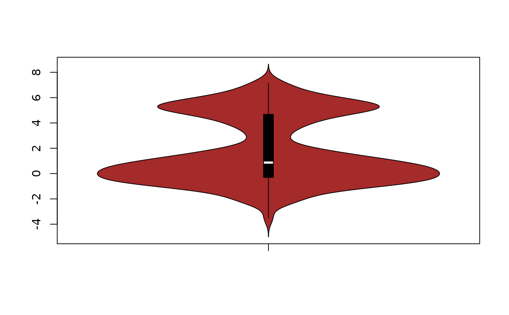
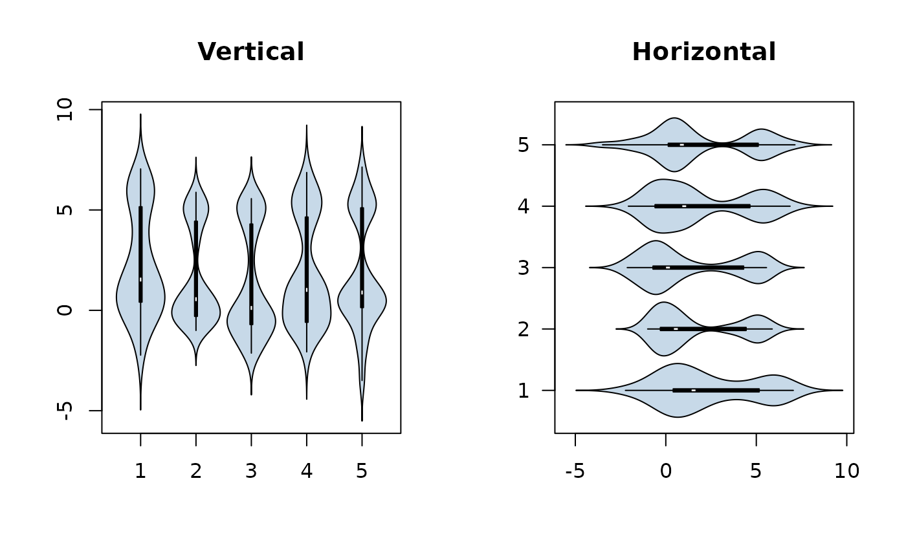
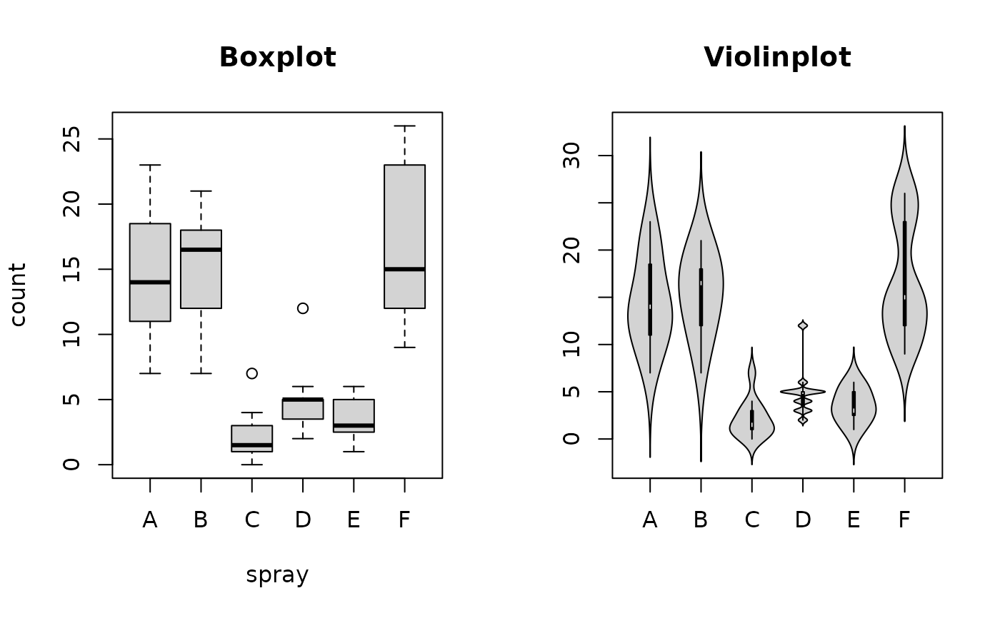
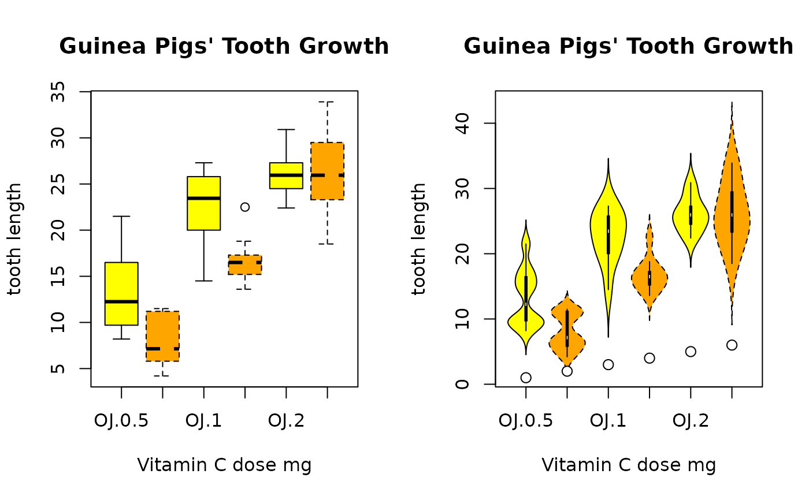

PlotViolin.RdThis function serves the same utility as side-by-side boxplots, only it provides more detail about the different distribution. It plots violins instead of boxplots. That is, instead of a box, it uses the density function to plot the density. For skewed distributions, the results look like "violins". Hence the name.
PlotViolin(x, ...) # S3 method for default PlotViolin(x, ..., horizontal = FALSE, bw = "SJ", na.rm = FALSE, names = NULL, args.boxplot = NULL) # S3 method for formula PlotViolin(formula, data, subset, na.action, ...)
| x | Either a sequence of variable names, or a data frame, or a model formula |
|---|---|
| horizontal | logical indicating if the densityplots should be horizontal; default |
| bw | the smoothing bandwidth (method) being used by |
| na.rm | logical, should NAs be omitted? The density-function can't do with missings. Defaults to |
| names | a vector of names for the groups. |
| formula | a formula, such as y ~ grp, where y is a numeric vector of data values to be split into groups according to the grouping variable grp (usually a factor). |
| data | a data.frame (or list) from which the variables in formula should be taken. |
| subset | an optional vector specifying a subset of observations to be used for plotting. |
| na.action | a function which indicates what should happen when the data contain NAs. Defaults to |
| ... | The dots are passed to |
| args.boxplot | list of arguments for a boxplot to be superposed to the densityplot. By default (NULL) a
black boxplot will be drawn. Set this to |
If a boxplot was drawn then the function returns a list with the following components:
a matrix, each column contains the extreme of the lower whisker, the lower hinge, the median, the upper hinge and the extreme of the upper whisker for one group/plot. If all the inputs have the same class attribute, so will this component.
a vector with the number of observations in each group.
a matrix where each column contains the lower and upper extremes of the notch.
the values of any data points which lie beyond the extremes of the whiskers.
a vector of the same length as out whose elements
indicate to which group the outlier belongs.
a vector of names for the groups.
This function is based on violinplot (package UsingR).
Some adaptions were made in the interface, such as to accept the same
arguments as boxplot does. Moreover the function was extended by the option to have a boxplot superposed.
The code is based on the boxplot function from R/base.
John Verzani, Andri Signorell <andri@signorell.net>
par(mfrow=c(1,2)) f <- factor(rep(1:5, 30)) # make a quintet. Note also choice of bandwidth PlotViolin(x ~ f, col = SetAlpha("steelblue",0.3), bw = "SJ", main="Vertical") # and the same, but in horizontal arrangement PlotViolin(x ~ f, col = SetAlpha("steelblue",0.3), bw = "SJ", horizontal = TRUE, las=1, main="Horizontal")# example taken from boxplot boxplot(count ~ spray, data = InsectSprays, col = "lightgray", main="Boxplot") PlotViolin(count ~ spray, data = InsectSprays, col = "lightgray", main="Violinplot")# groupwise densityplots defined the same way as in boxplot boxplot(len ~ supp*dose, data = ToothGrowth, main = "Guinea Pigs' Tooth Growth", xlab = "Vitamin C dose mg", ylab = "tooth length", col=c("yellow", "orange"), lty=c(1,2) ) b <- PlotViolin(len ~ supp*dose, data = ToothGrowth, main = "Guinea Pigs' Tooth Growth", xlab = "Vitamin C dose mg", ylab = "tooth length", col=c("yellow", "orange"), lty=c(1,2) )# use points, if the medians deserve special attention points(x=1:6, y=b$stats[3,], pch=21, bg="white", col="black", cex=1.2)